Younger to mid-career aquarium divers with specialized training.
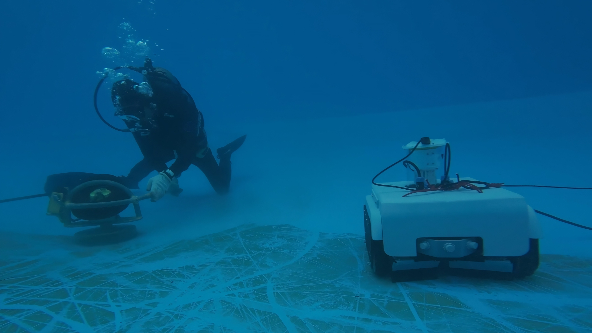
Underwater Robotics | 2026
Guinn
Beneath the surface,
Beyond the ordinary.
An underwater tank clenaing robot equipped with scrapers and vacuum cleaner. Uniquely designed for algae and debris removal.
System
Robotics
My Focus
CAD Modeling · Manufacturing · Design
Context
Project Background
Water tanks often suffer from algae growth and debris buildup, which can compromise water quality and require frequent, labor‑intensive maintenance. Manual cleaning is not only inefficient but also poses safety risks in submerged environments. To address these challenges, we reached out to Ocean Park Hong Kong and started developing Guinn as a cleaning helper.
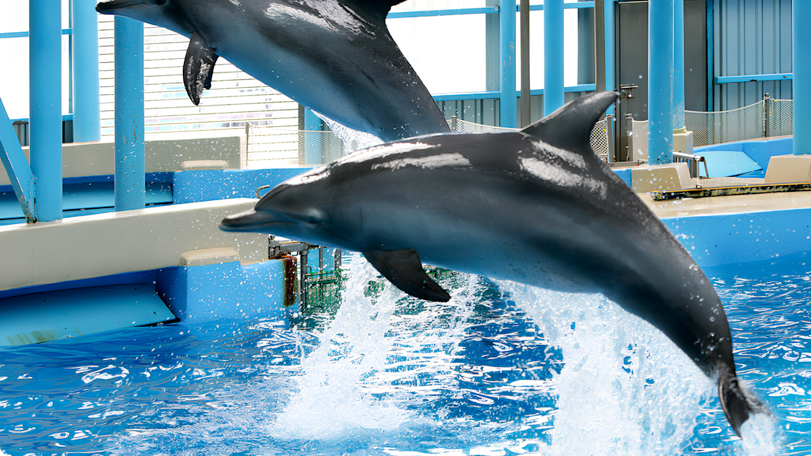
Target audience
User Demographic
Long working hours that blend physical labor with animal care.
Physically demanding tasks that may lead to occupational risks.
Interest in tools that reduce strain and improve efficiency.
Research
Listening beyond the dashboard.
Ocean Park Hong Kong
INTERVIEW
01
Limited Workforce
With only a few dedicated divers available, the workload becomes overwhelming and many others have to pull double duties.
02
Time‑Intensive Cleaning
Divers spend long hours scrubbing tank walls and removing debris. The process is slow and physically demanding.
03
Persistent Algae Types
Green and black algae are the most common forms found in aquariums. They grow quickly and require repeated manual effort to remove.
Problem Definition
The gap between seeing and knowing.
Aquarium divers spent most of their days cleaning aquariums and tanks, which takes away their time to do more meaningful work for animal welfare.
Problem Breakdown
01 /
What
Cleaning aquariums and tanks takes a lot of time.
02 /
When
Maintenance time when no animals are present.
03 /
Where
Ocean Park’s dolphin tanks and aquariums (excluding themings).
04 /
Who
Aquarium divers and keepers.
05 /
Why
More time to care for aminals.
06 /
How
Clean tanks with minimal manual effort.
Our Solution
A robot for underwater cleaning.
Guinn is an underwater tank cleaning robot with 5 major subsystems: a chasis, a vacuum cleaner, scrapers, navigation system and communication system. It can operate under 5 meters of salt water manualy or automaticaly.
The system
5 subsystems in 1.
3 Physical Modules
- Tread-based chasis for movements
- Rubber scrapers for algae removal.
- Vacuum Chamber for debris isolation.
Navigation Protocols
- SLAM algorithm with ultrasonic sensors.
- Detection of outer perimeters.
- Zig-zag movement pattern.
Communication Network
- Corded wiring with minimal interference.
- Enables manual control.
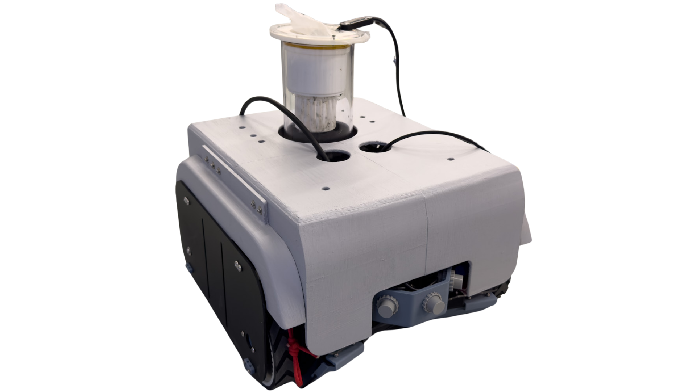
Gallery
A closer look.
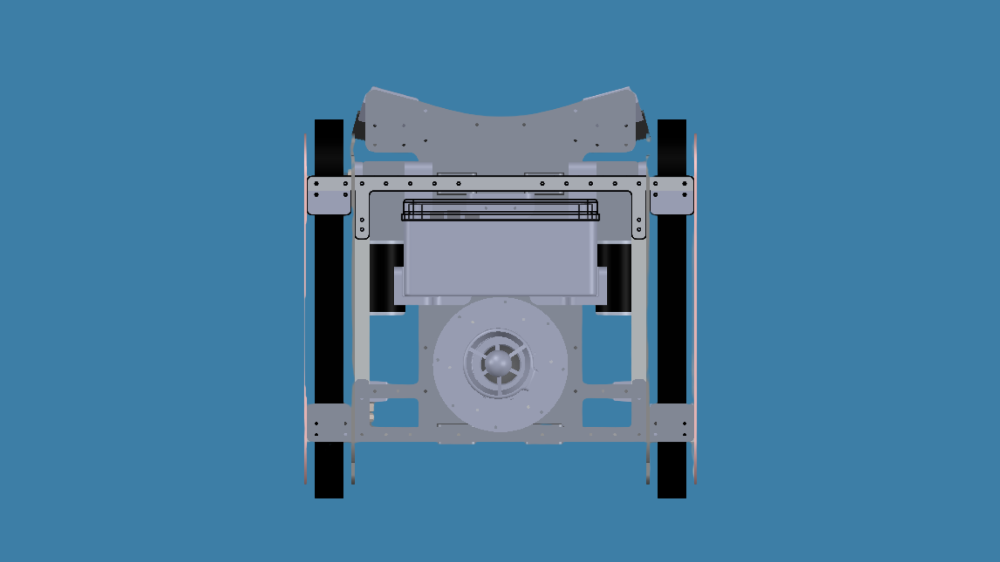
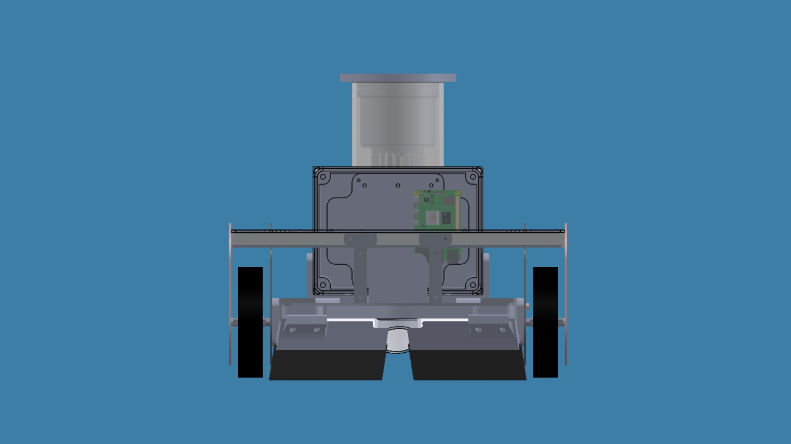
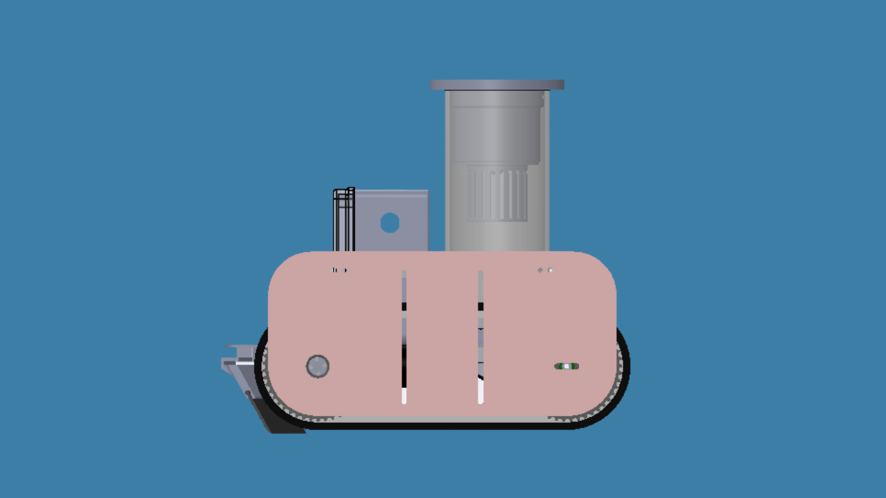
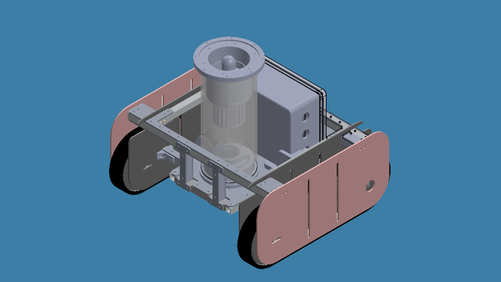
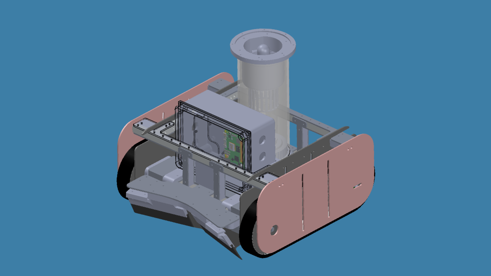
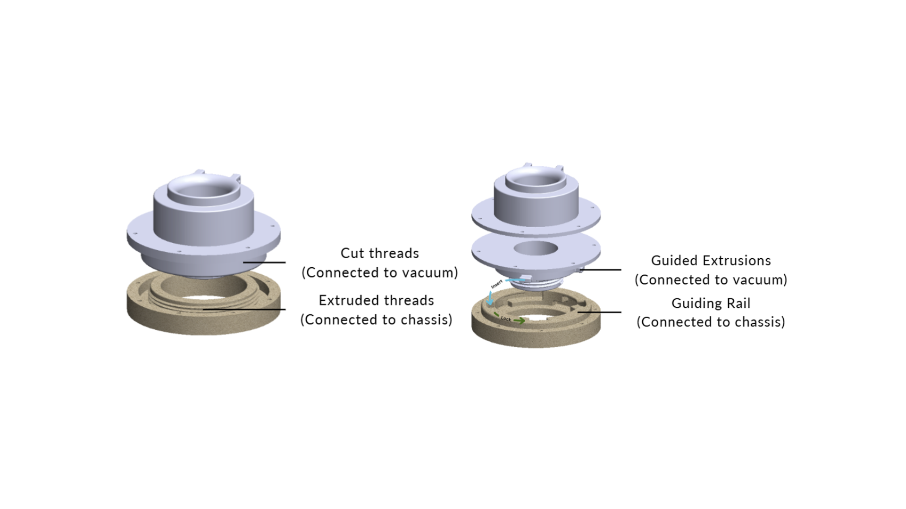
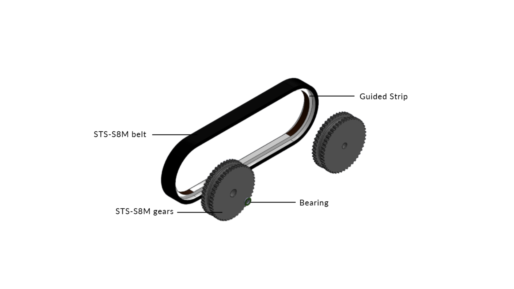
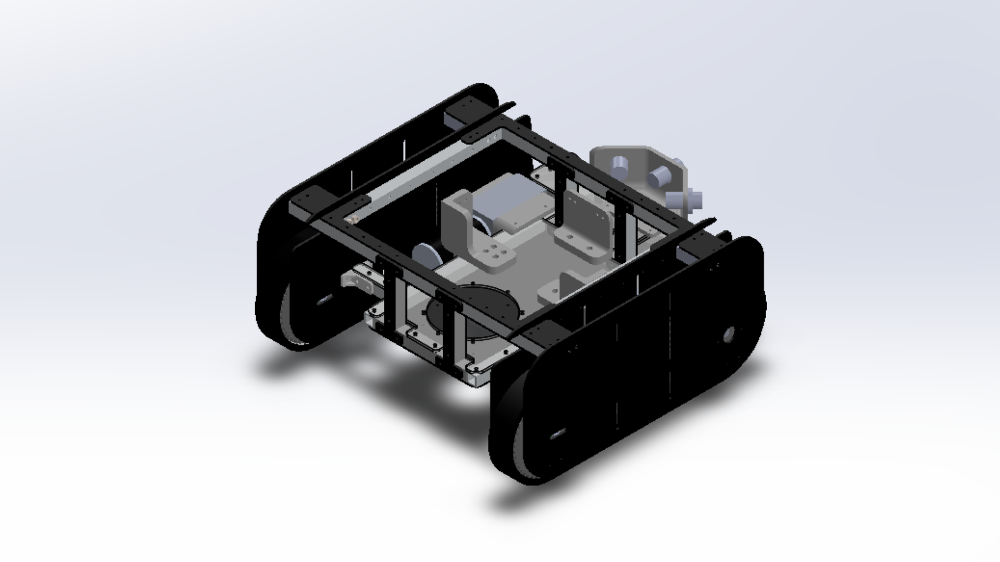
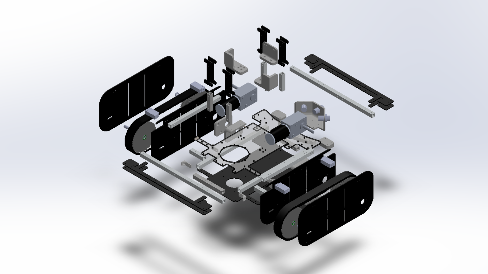
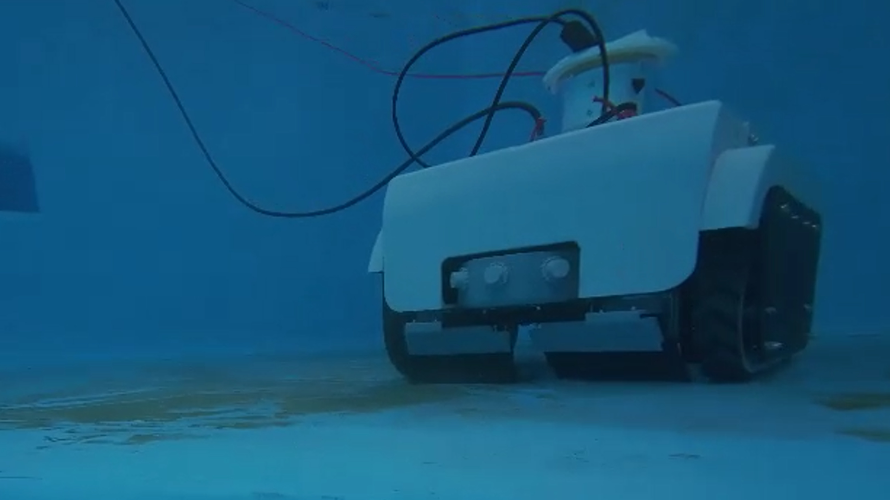
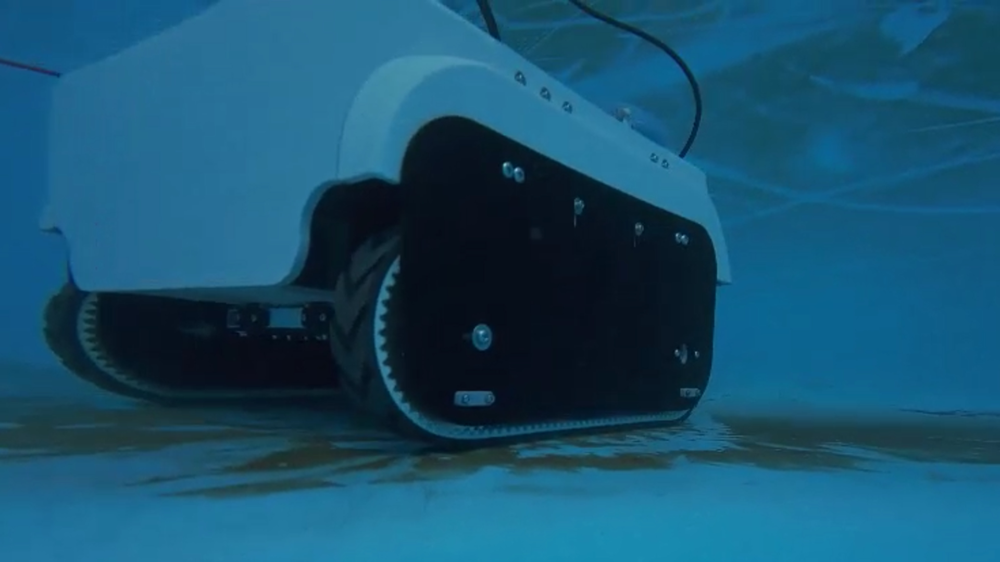
Iterations
Evolving systems.
Guinn has been through 3 separate version. With each upgrade, the robo-cleaner is becoming more capable. The final version of the chassis is manufactured with 316 steel plates, aluminum tubes and additional PETG 3D prints. It is completed with a custom-made rubber scraper and a vacuum chamber made with acrylic tube and PETG 3D prints.
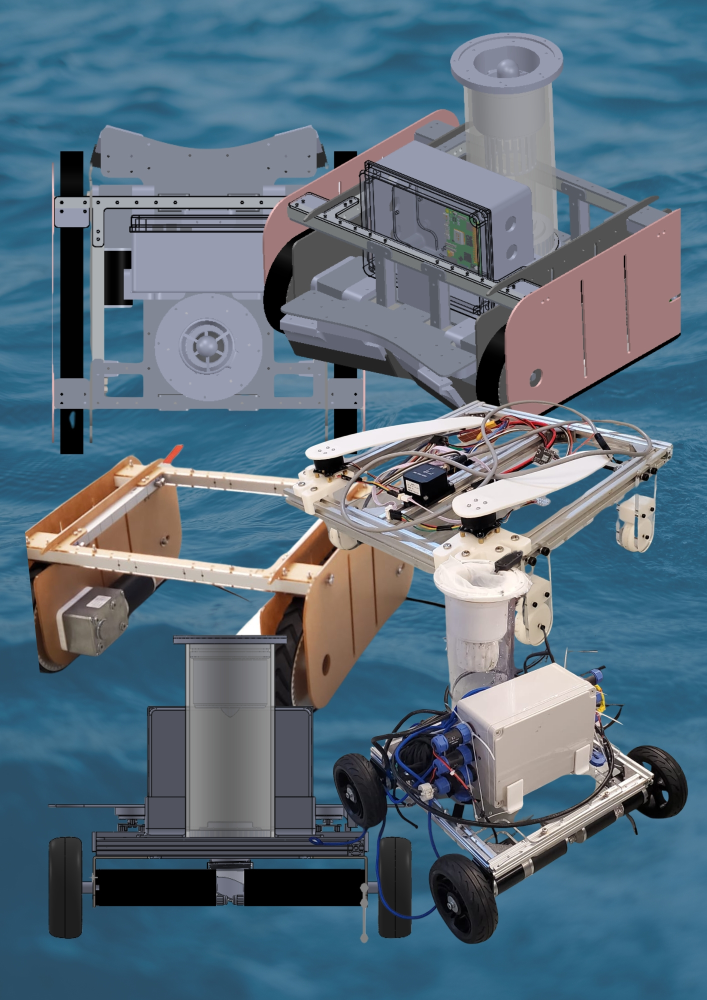
Chassis designs.
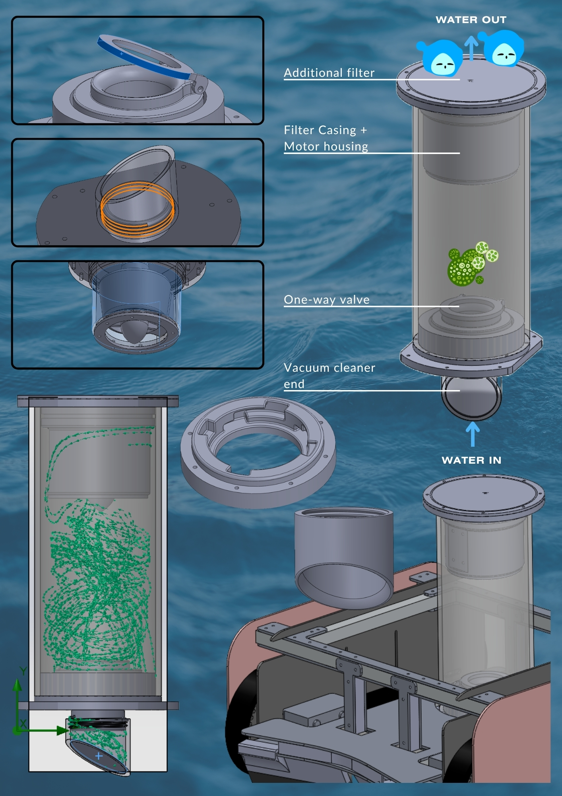